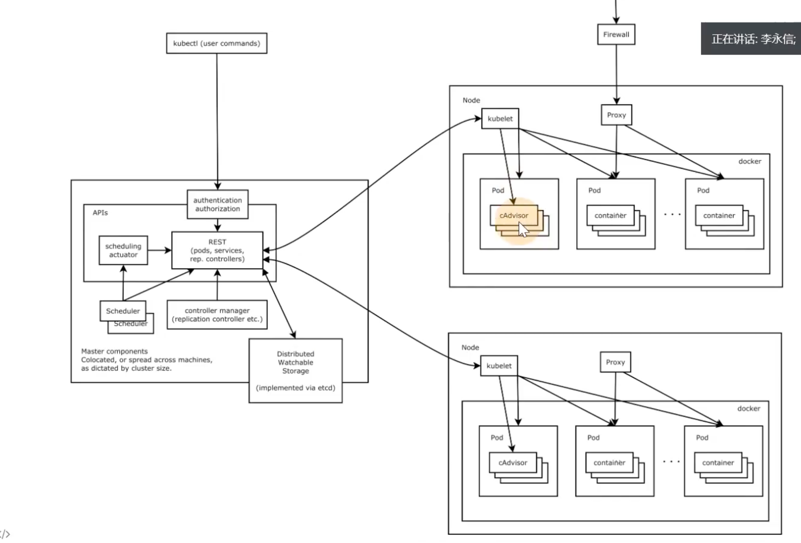
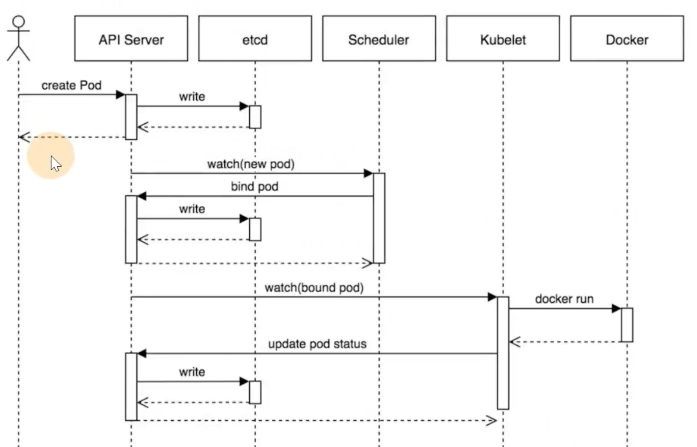

2024-03-09
Kubernetes
修改于: 2024-03-09官网主页: Kubernetes 文档
k8s集群演变:
单体应用 --> 前后端分离 --> 微服务 --> 容器（貌似单体应用就有了） --> k8s容器集群
k8s大体架构:
ingress （流量进入） ingress pod (一般是nginx分发) front-end service (前端) backend service （后端） pod1 pod2 pod5
纯容器集群的问题
- 业务容器数量庞大，哪些容器部署在哪些节点，使用了哪些端口，如何记录、管理
- 跨主机通信，多个机器中的容器之间相互调用如何做，iptables规则手动维护？
- 跨主机容器间互相调用，配置如何写？写死固定IP+端口？
- 如何实现业务高可用？多个容器对外提供服务如何实现负载均衡？
- 容器的业务中断了，如何可以感知到，感知到以后，如何自动启动新的容器？
- 如何实现滚动升级保证业务的连续性？
集群管理
因为 纯容器集群的问题 , 所以有了集群管理工具
- Docker Swarm
- Mesos
- Google Kubernetes
2017年开始 Kubernetes 凭借强大的容器集群管理功能，逐步占据市场，目前在容器编排领域一枝独秀
k8s 架构
分布式系统，两类角色
- 管理节点master
- 工作节点worker(或者slave)

架构图
k8s 核心组件
主要是针对管理结点
- ApiServer
- APJ服务器，集群资源访问控制入口，提供reStAPJ及安全访问控制
- ETCD
- 分布式高性能键值数据库，存储整个集群的所有元数据
- Scheduler
- 调度器，负责把业务容器调度到最合适的Node节点
- Controller Manager
控制器管理，确保集群资源按照期望的方式运行
- Replication Controller
- Node controller
- ResourceQuota Controller
- Namespace Controller
- ServiceAccount Controller
- Token Controller
- Service Controller
- Endpoints Controller
- kubelet
运行在每个节点上的主要的"节点代理"，脏活累活(Docker主要是在这)
- pod 管理
- kubelet 定期从所监听的数据源获取节点上pod/container 的 期望状态（运行什么容器、运行的副本数量、网络或者存储如何配置等等）， 并调用对应的容器平台接口达到这个状态。
- 容器健康检查
- kubelet 创建了容器之后还要查看容器是否正常运行， 如果容器运行出错，就要根据 pod 设置的重启策略进行处理.
- 容器监控
- kubelet 会监控所在节点的资源使用情况，并定时向 master 报告， 资源使用数据都是通过 GAdvisor 获取的。 知道整个集群所有节点的资源情况，对于 pod 的调度和正常运行至关重要
- kube-proxy
- 维护节点中的iptables或者ipvs规则
- Kubectl
- 命令行接口，用于对 Kubernetes 集群运行命令 https://kubernetes.io/zh/docs/reference/kubect!/

工作流程